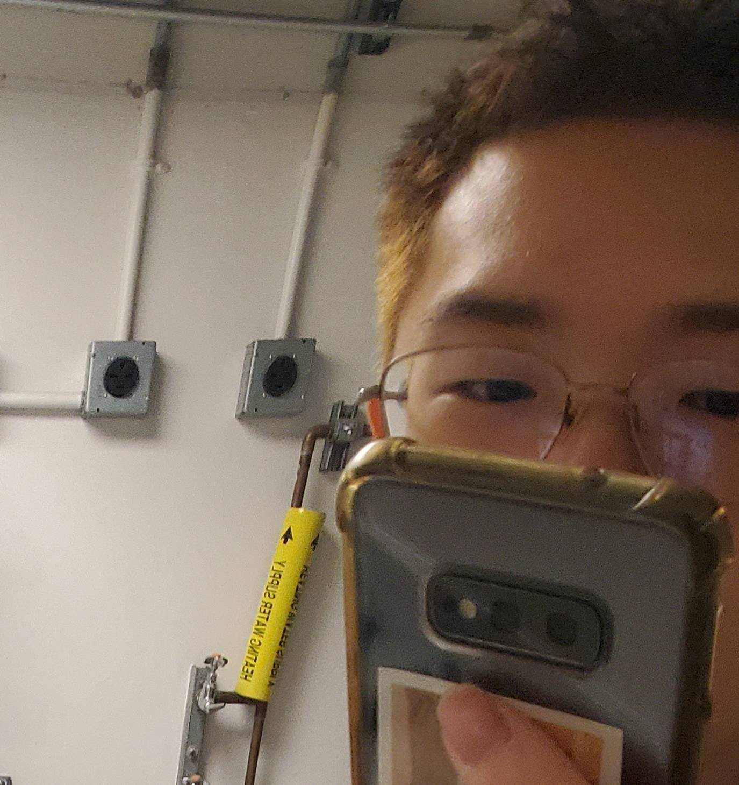

open-source
write
me

it's tim...
being instagramless is hard so im doing this instead
it’s never joever
Ultimate Guide to Scallion Pancakes— 6 methods! (蔥油餅)
external example
Teaser for your external link
Read more →
external example
Teaser for your external link
Read more →


 external example
external example